A dinastia de um homem só
"Um terror na arena de Valhalla... Pelo menos quando ele não é convocado da sepultura novamente..."


O rei Azoth, o Grande, jurou que seu império duraria por toda a eternidade. Mergulhando na magia negra e antiga, seu feiticeiro da corte criou sete pedras da alma que, quando reunidas, poderiam convocar Azoth das garras da própria morte para cumprir seu juramento. Mil anos após sua morte, devotos acólitos de seu império esquecido reuniram as pedras. Azoth acordou, tão brilhante e implacável na batalha como sempre, embora um pouco empoeirado. Assim começou o primeiro reinado de Lichlord Azoth. Somente após uma saga de heroísmo épico os servos da luz conseguiram derrotar Azoth e espalhar as pedras da alma. As Valquírias, impressionadas com as proezas de batalha de Azoth e sua perseverança, deram ao lich um assento em Valhalla. No entanto, o voto não foi esquecido. Os cultistas azothianos reuniram as pedras da alma novamente, e Azoth se viu de volta a Elyria. Mais uma vez, um bando desesperado de heróis mal o derrotou. Lorde Azoth, o Poderoso. Asotos, o Terrível. Azothus Triunfante – repetidas vezes Azoth foi convocado de Valhalla para reprisar seu papel como o flagelo dos vivos. Bem-vindo à vida após a morte de Azoth. Ele ficaria mais do que feliz em ficar aposentado em Asgard, desfrutando de alguma leitura, uma batalha ocasional e a companhia de seu gato Dander. Pela Antiga Lei, mesmo a maldição mais hedionda deve conter a semente de sua ruína: Azoth pode quebrar o ciclo pesado por meio de dez mil atos altruístas. Ele acha que se cuidar de animais de estimação conta, ele pode estar em um.
 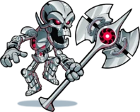
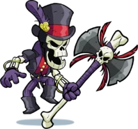
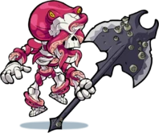
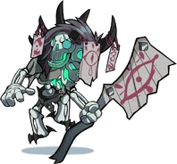
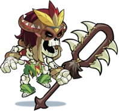
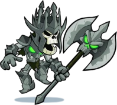
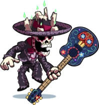
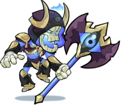
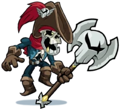
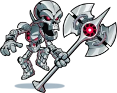
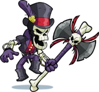
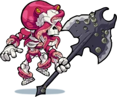
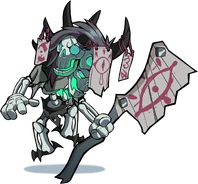
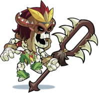
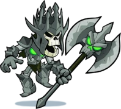
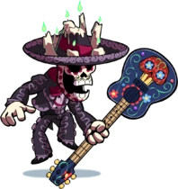
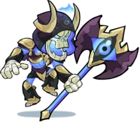
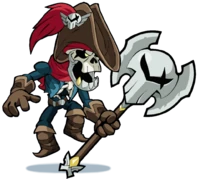